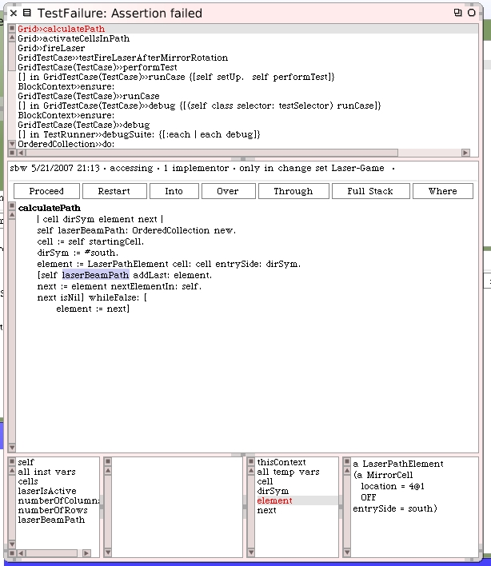
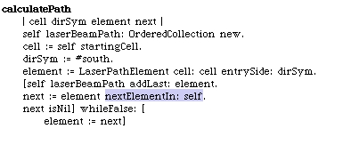
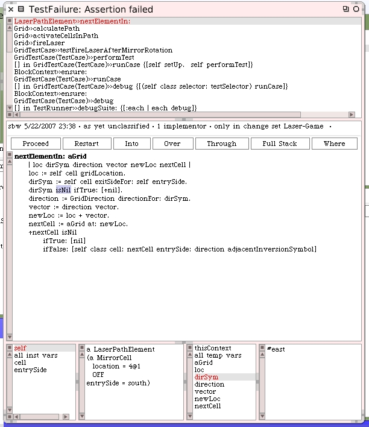
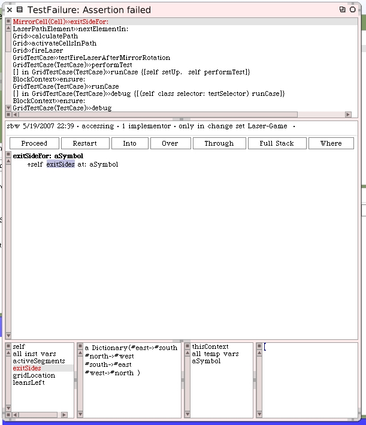
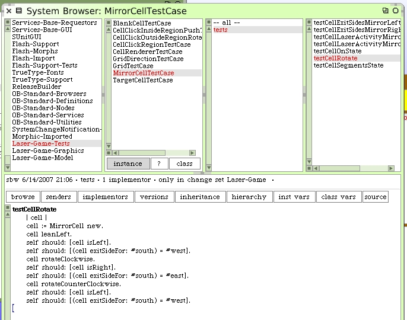
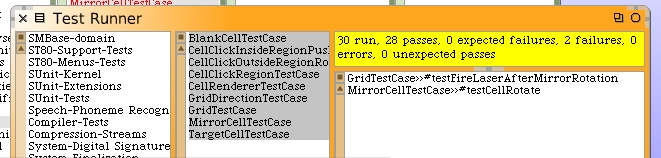

Keep stepping through the code with the "Over" button until you get to the troubled mirror cell at 4@1.
Step into the method #nextElementIn:. This one should be responsible for answering an element in a new direction since this mirror cell is rotated.
Keep stepping until you get to where the mirror cell just answered the exit side.
That's not right. The "dirSym" should have been #west, not #east. In the debugger restart execution of this method and start stepping again. We're going to go "into" the #exitSideFor: method and see what's going on here.
The values for exit sides are not correct. Look at the display of the contents of that instance variable in the bottom of my debugger window.
This is a great clue. We now know that when we rotate a mirror cell we have to adjust the exitSides dictionary. We can make this part of our rotation unit test for the mirror cell. Close the debugger. We're done here. It's time to go enhance a unit test.
Here's our new and improved rotate unit test for mirror cells.
When unit tests are run we get 2 failures. The one we started debugging and, just as we anticipated, a new failure in the #testCellRotate for our mirror cell.
We don't have to open a debugger and see what this problem it. We know what's wrong with this test.